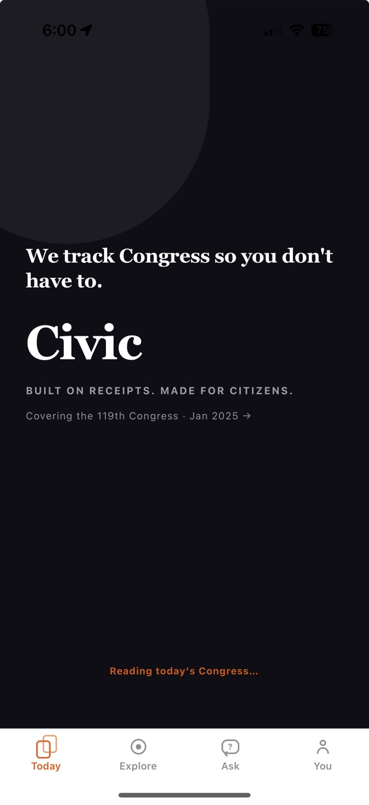
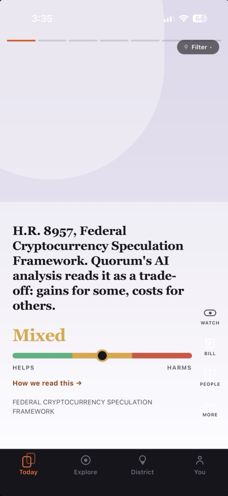
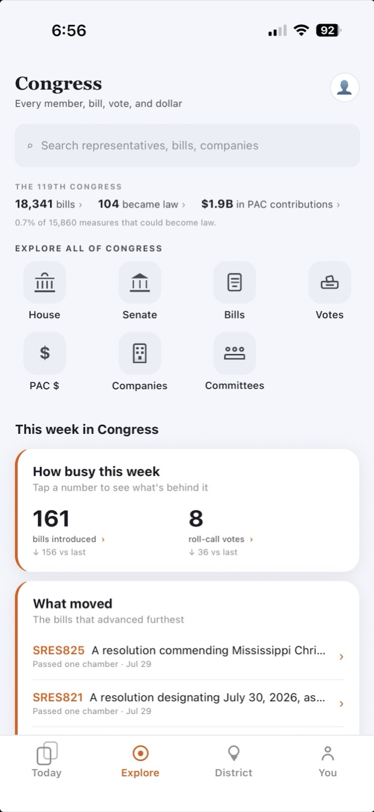
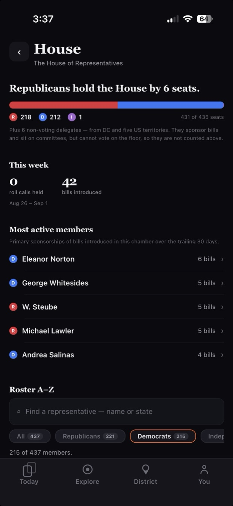
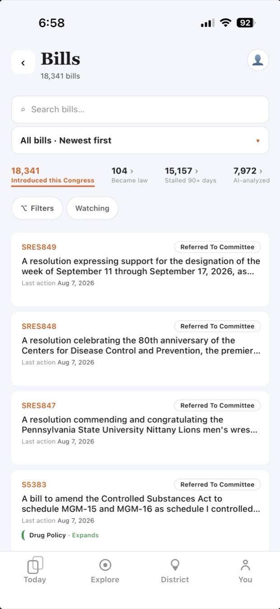

Understand what Congress is doing, and what it means.
QuorumCivic is a nonpartisan lookup app for the public record, focused on the current Congress, the 119th (2025–2027). Search legislation, read plain-English bill analysis, follow roll-call votes, and ask questions about Congress in your own words.
Start with your own three
One representative and two senators vote in your name. Enter your ZIP to see who they are, straight from the congressional record.
Looked up on this device. Your ZIP is never stored on our servers; this browser remembers it so you don't retype it.
A look inside
Swipe to explore →





What's inside
Bill intelligence
Plain-English summaries of legislation. See which bills are transparent and which bury hidden riders, sponsorships, or industry-specific carve-outs.
Roll-call votes
House and Senate roll calls, with each member's position and party-line behavior. See who broke ranks and on what.
Ask anything
A natural-language interface over the civic data layer. Ask about a bill, a member, a committee, a vote, and get a sourced answer.
Built on public records
Every fact is traceable to its source: Congress.gov, Senate.gov and the House Clerk, the FEC, SEC filings, Senate lobbying disclosures, the Federal Register, USAspending, the FDA, the Census Bureau, BLS, the FBI and the CDC — 15 government sources in all. No proprietary insider data, no closed sources.
What it isn't
QuorumCivic is a nonpartisan civic information tool. It is not a brokerage, not a financial advisor, not a partisan scorecard, and not a news aggregator. It does not endorse candidates, does not tell you how to vote, and does not provide personalized investment advice. Every piece of intelligence in the app is framed with its source and its limits.
Why this was built
QuorumCivic didn't start with a mission statement. It started with a handful of what-ifs. What if you could see what your government is actually doing? What if you could follow the money flowing in and out? What if you could lay the donations next to the votes, the trades next to the bills? What if you could see the whole picture, in one place, in plain English?
None of those should be open questions. Every answer is already public: the bills, the roll calls, the campaign finance, the disclosures. It's just scattered across government databases and buried in legalese.
QuorumCivic is the answer. A lookup app for the public record. No agenda, no angle, no pitch. Just what's hidden in plain sight.
About
The Katalys Group LLC is a martech consulting company that builds solutions. We take business ideas and make them real. QuorumCivic is one of them, a small, focused lookup engine that turns Congress's daily output into something a citizen can actually read.
Questions, feedback, or press inquiries: hello@quorumcivic.app.
See it for yourself
QuorumCivic is free on iOS and Android. Look up a bill, a vote, a member, or the money behind them; every fact carries its source.